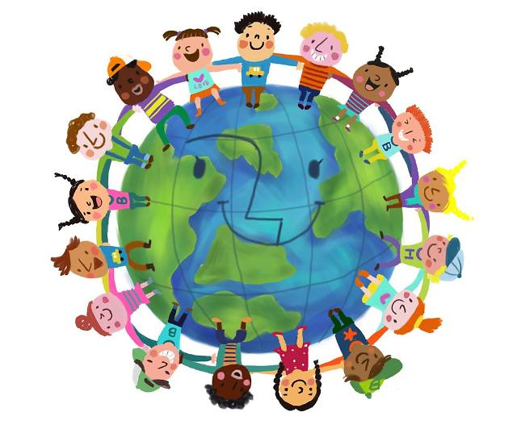

다문화 차별이 무엇인지 설명하겠습니다.
다른 나라에서 온 사람들을 우리나라 사람들보다 낮게 보는 것을 다문화 차별이라고 말합니다.
다문화에 대한 사례
이렇게 많은일들이 일어나고 있습니다. 이런 일들을 줄이고 싶다면 우리가 먼저 바뀌어야 합니다.
일단은 우리에 고정관념을 바꿔야합니다. 이 고정관념이 처음에는 좋을 수도 있지만 나중에는 꼭 도와줘야한다는 마음이 내가 도와줘야지 되는사람이라고 알게되고 차별하게됩니다.
다문화는 우리가 존중해야지 무조건 도와줘야하는것은 아닙니다. 그들이 할수있는건 그들이 하도록 해야합니다. 그런마음을 갖는다면 다문화 인권침해가 하나라도 줄어들것입니다.
 되돌아가기